Plantea una investigación, exprésala con datos y elige el instrumento adecuado para cada medida.
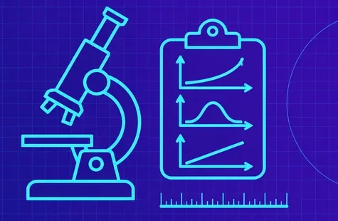
Apartado 01 / 04
1. El método científico y sus fases
La investigación científica formula preguntas y busca respuestas que se puedan contrastar con datos. Las fases orientan el trabajo y a veces se repiten al aparecer nueva información.
Recorre las fases de una investigación
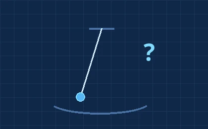
Fase 1
Observación y pregunta
Describe lo que ocurre y formula una pregunta que puedas investigar. Anota qué has observado y cómo lo has medido.
Ejemplo. Vemos que dos péndulos oscilan a distinto ritmo. ¿Influye la longitud del hilo en el tiempo de una oscilación?
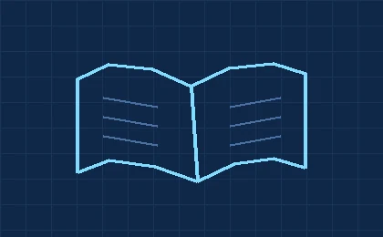
Fase 2
Búsqueda de información
Busca explicaciones y experimentos anteriores. Anota la autoría, el título y la procedencia de las fuentes para volver a consultarlas.
Ejemplo. Consultamos qué es el período de un péndulo y cómo se mide. Una oscilación completa termina al regresar al punto de partida en el mismo sentido.
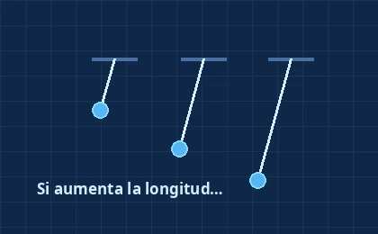
Fase 3
Formulación de una hipótesis
Propón una respuesta concreta y comprobable. Indica qué resultado esperarías si tu explicación fuese correcta.
Ejemplo. Si alargamos el hilo, el péndulo tardará más tiempo en completar diez oscilaciones.
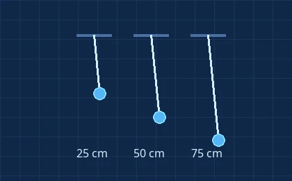
Fase 4
Experimentación
Cambia la variable que quieres estudiar y mide el resultado. Mantén constantes otras condiciones y repite cada medida.
Ejemplo. Usamos hilos de 25, 50 y 75 cm con la misma masa y el mismo ángulo inicial pequeño. Cronometramos diez oscilaciones en cada intento.
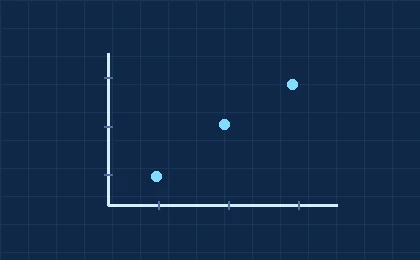
Fase 5
Análisis de resultados
Organiza las medidas en una tabla. Representa la variable que cambias en el eje horizontal y la que mides en el vertical, con sus unidades.
Ejemplo. Representamos la longitud en centímetros frente al tiempo de diez oscilaciones en segundos. Así podemos comparar los resultados de los tres ensayos.
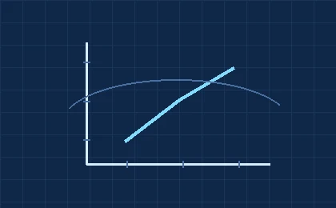
Fase 6
Conclusiones y formulación de leyes
Contrasta el resultado con tu hipótesis y señala hasta dónde se puede generalizar. Una ley describe una regularidad respaldada por numerosas observaciones.
Ejemplo. En el intervalo estudiado, a mayor longitud, mayor tiempo. Estos datos por sí solos no permiten afirmar que el tiempo sea directamente proporcional a la longitud.
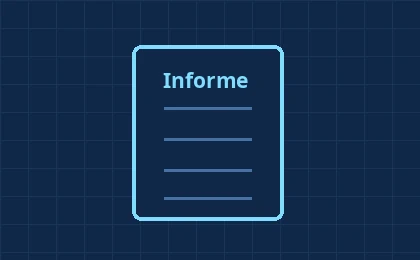
Fase 7
Comunicación de resultados
Explica la pregunta, los materiales, el procedimiento, los datos, las conclusiones y las fuentes. Da el detalle necesario para repetir la investigación.
Ejemplo. En el informe incluimos cómo medimos la longitud, el número de intentos y la tabla de resultados. Comentamos el efecto del tiempo de reacción al usar el cronómetro.
De los datos a la conclusión
En el ejemplo del péndulo, la longitud es la variable independiente y el tiempo es la variable dependiente. Se controlan la masa y el ángulo inicial. Esta tabla contiene datos simulados para practicar su interpretación.
Tiempo de diez oscilaciones según la longitud del péndulo
Longitud (cm)
Tiempo de diez oscilaciones (s)
25
10,0
50
14,2
75
17,4
Un gráfico de puntos permite ver la relación entre longitud y tiempo. Un gráfico de barras compara categorías y uno de sectores muestra cómo se reparte un total.
Hipótesis, ley, teoría y modelo
Una hipótesis es una explicación que se puede poner a prueba. Una ley describe una regularidad, con palabras o con una relación matemática. Una teoría explica un conjunto de observaciones y un modelo representa de forma simplificada un objeto o proceso para estudiarlo.
El informe científico
Incluye título, autoría, objetivo e hipótesis. A continuación, explica los materiales y el procedimiento, presenta los resultados y sus limitaciones y termina con las conclusiones y las fuentes consultadas.
Apartado 02 / 04
2. La medida
Una magnitud es una propiedad que se puede medir. Medir es compararla con una unidad de referencia. En 25 cm, la magnitud es la longitud, 25 es el valor y cm es la unidad.
Magnitudes básicas del Sistema Internacional
Magnitud
Unidad
Símbolo
Longitud
metro
m
Masa
kilogramo
kg
Tiempo
segundo
s
Temperatura termodinámica
kelvin
K
Intensidad de corriente eléctrica
amperio
A
Cantidad de sustancia
mol
mol
Intensidad luminosa
candela
cd
Magnitudes derivadas
Se expresan a partir de otras magnitudes. Por ejemplo, la rapidez es la distancia recorrida dividida entre el tiempo que se tarda.
Magnitud
Unidad
Superficie
m²
Volumen
m³
Rapidez
m/s
Densidad
kg/m³
Una medida puede ser directa, como la longitud leída en una regla, o indirecta, como la superficie de un rectángulo calculada a partir de sus lados. Se deja un espacio entre el número y el símbolo. Los símbolos distinguen mayúsculas y minúsculas y se escriben sin plural.
Múltiplos, submúltiplos y factores de conversión
Los prefijos indican potencias de diez. Kilo (k) equivale a 10³, hecto (h) a 10² y deca (da) a 10¹. Deci (d) equivale a 10⁻¹, centi (c) a 10⁻², mili (m) a 10⁻³ y micro (µ) a 10⁻⁶.
Multiplica por una fracción que exprese dos cantidades iguales. Coloca la unidad que quieres cancelar en el lado opuesto de la fracción.
250 cm² × (1 m / 100 cm)² = 0,025 m²
En superficies se eleva al cuadrado el factor de longitud. En volúmenes, se eleva al cubo. Si hay dos unidades, como en km/h, se convierte cada una.
36 km/h × (1 000 m / 1 km) × (1 h / 3 600 s) = 10 m/s
El volumen mide el espacio que ocupa un cuerpo. La capacidad indica cuánto cabe dentro de un recipiente.
1 L = 1 dm³ · 1 mL = 1 cm³ · 1 m³ = 1 000 L
La notación científica expresa una cantidad como un número entre 1 y 10 multiplicado por una potencia de diez. Por ejemplo, 0,0047 m = 4,7 × 10⁻³ m.
Al redondear, mira la primera cifra que vas a descartar. Si es 5 o mayor, aumenta en una unidad la última que conservas. Por ejemplo, 3,476 m redondeado a dos decimales es 3,48 m.
Apartado 03 / 04
3. Los instrumentos de medida
Antes de medir, identifica la magnitud y elige un instrumento cuyo intervalo y resolución sean adecuados. Para estimar un volumen puedes usar una probeta. Para preparar exactamente el volumen indicado por una marca utiliza un matraz aforado.
Identifica el material de laboratorio
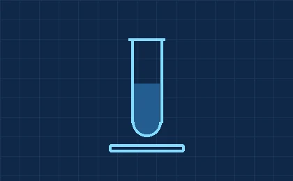
Ensayos
Tubo de ensayo
Contiene pequeñas muestras durante un ensayo. La gradilla lo mantiene vertical.
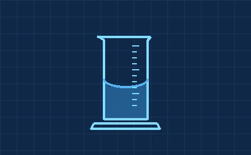
Volumen
Probeta graduada
Mide volúmenes de líquido. Se apoya en una superficie horizontal y se lee la escala a la altura del menisco.
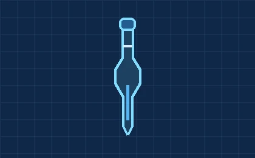
Volumen
Pipeta
Toma y transfiere un volumen pequeño con precisión. Se utiliza con un dispositivo de aspiración adecuado.
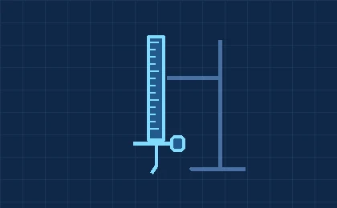
Volumen
Bureta
Dispensa volúmenes controlados mediante una llave. El volumen entregado se obtiene restando las lecturas final e inicial.
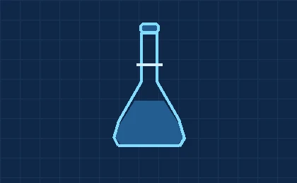
Volumen fijo
Matraz aforado
Sirve para preparar un volumen concreto de disolución. La marca del cuello indica el aforo.
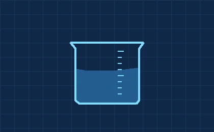
Mezclas
Vaso de precipitados
Contiene líquidos y permite mezclarlos. Las marcas de su escala dan una estimación del volumen.
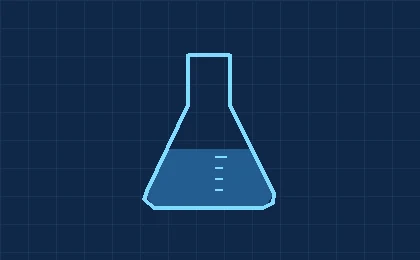
Mezclas
Matraz Erlenmeyer
Su cuerpo cónico y cuello estrecho permiten agitar un líquido con menos salpicaduras. Sus marcas suelen ser orientativas.
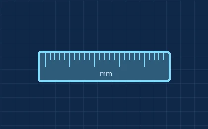
Longitud
Regla graduada
Mide longitudes rectas. Una escala milimetrada tiene divisiones de 1 mm.
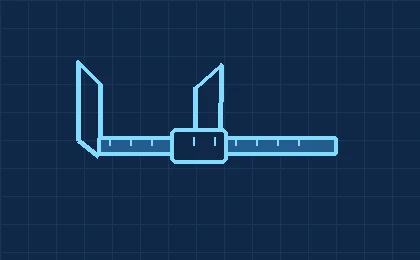
Longitud
Calibre
Mide diámetros, espesores y profundidades. Sus mordazas permiten medir por fuera y por dentro.
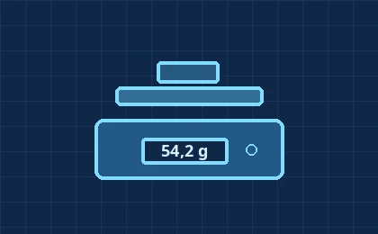
Masa
Balanza
Mide la masa. La función de tara descuenta la masa del recipiente vacío.
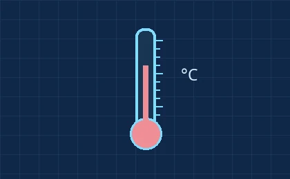
Temperatura
Termómetro
Mide la temperatura. Antes de anotar una lectura se espera a que se estabilice.
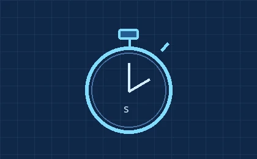
Tiempo
Cronómetro
Mide cuánto dura un proceso. Para una oscilación corta conviene medir varias y dividir el tiempo total entre el número de oscilaciones.
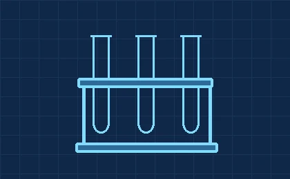
Soporte
Gradilla
Sostiene varios tubos de ensayo. También ayuda a mantener las muestras identificadas y separadas.
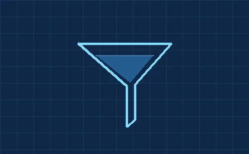
Trasvase y filtración
Embudo
Guía el líquido hacia una abertura estrecha. Con papel de filtro puede separar un sólido de un líquido.
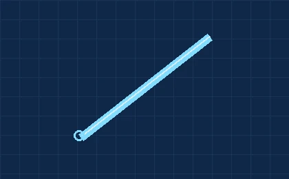
Agitación
Varilla de vidrio
Permite agitar mezclas y guiar un líquido al verterlo.
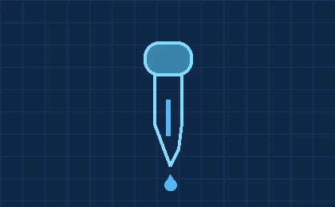
Transferencia
Cuentagotas
Añade pequeñas cantidades gota a gota. El volumen de cada gota depende del líquido y del instrumento.
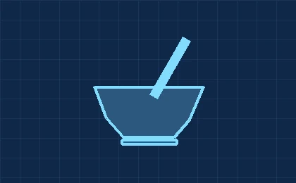
Preparación
Mortero y mano
Sirve para triturar sólidos y reducir el tamaño de sus partículas.
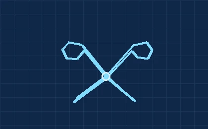
Sujeción
Pinzas para tubos
Permiten sujetar un tubo con firmeza y mantener las manos alejadas del ensayo.
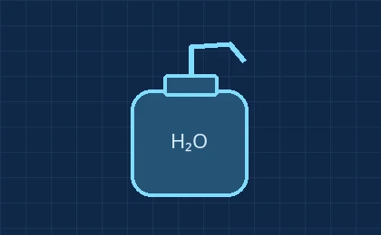
Enjuague
Frasco lavador
Dirige un chorro de agua destilada para enjuagar material o arrastrar restos durante un trasvase.
Cómo leer el menisco
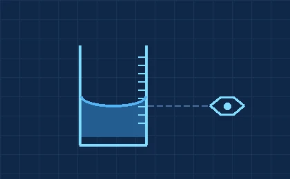
Con agua en una probeta, lee el punto más bajo del menisco. Coloca la vista a esa altura para evitar el error de paralaje.
Resolución e incertidumbre
La resolución indica el cambio más pequeño que el instrumento permite apreciar. En una regla con diez divisiones por centímetro, cada división representa 1 mm.
La incertidumbre expresa el margen asociado a una medida. Puede depender de la resolución, de la calibración y de cómo se realiza la lectura. Indica el criterio que usas. Si en clase se toma una división como incertidumbre, se podría anotar (47 ± 1) mm para esa regla.
Repetir una medida ayuda a valorar cuánto varían las lecturas. Una escala más fina facilita la lectura, aunque también importan la calibración y la técnica de medida.
Seguridad en el laboratorio
Sigue las indicaciones del profesorado y lee las etiquetas antes de usar cualquier producto.
Recoge el pelo largo, despeja la mesa y ponte la protección indicada para la práctica.
Mantén alimentos y bebidas fuera de la mesa. Avisa si hay un derrame, una rotura o un accidente.
Identifica los símbolos de peligro. La llama indica riesgo de inflamabilidad y el símbolo de corrosión advierte de posibles quemaduras o daños en materiales.
Gestión de residuos
Deposita cada residuo en el recipiente que indique el profesorado y conserva las etiquetas. El vidrio roto y los objetos punzantes se recogen con medios adecuados y se depositan en un contenedor rígido.
Los reactivos y el material contaminado se gestionan según las indicaciones de la práctica y del laboratorio. Consulta dónde van antes de verter o mezclar residuos.
Apartado 04 / 04
Comprueba lo aprendido
¿Qué mantendrías constante al investigar cómo afecta la longitud al período de un péndulo?
La masa suspendida y el ángulo inicial, entre otras condiciones. Se cambia la longitud y se mide el tiempo.
Si diez oscilaciones duran 14,2 s, ¿cuánto dura una oscilación?
El período es 14,2 s ÷ 10 = 1,42 s.
¿Cuántos litros y centímetros cúbicos son 350 mL?
Son 0,350 L y 350 cm³.
¿Qué usarías para preparar una disolución de exactamente 250 mL?
Un matraz aforado de 250 mL, ajustando el menisco a la marca según las indicaciones de la práctica.
Si los datos contradicen la hipótesis, ¿qué haces?
Comprueba las medidas y el procedimiento. Si el resultado se confirma, revisa la hipótesis y documenta lo observado.